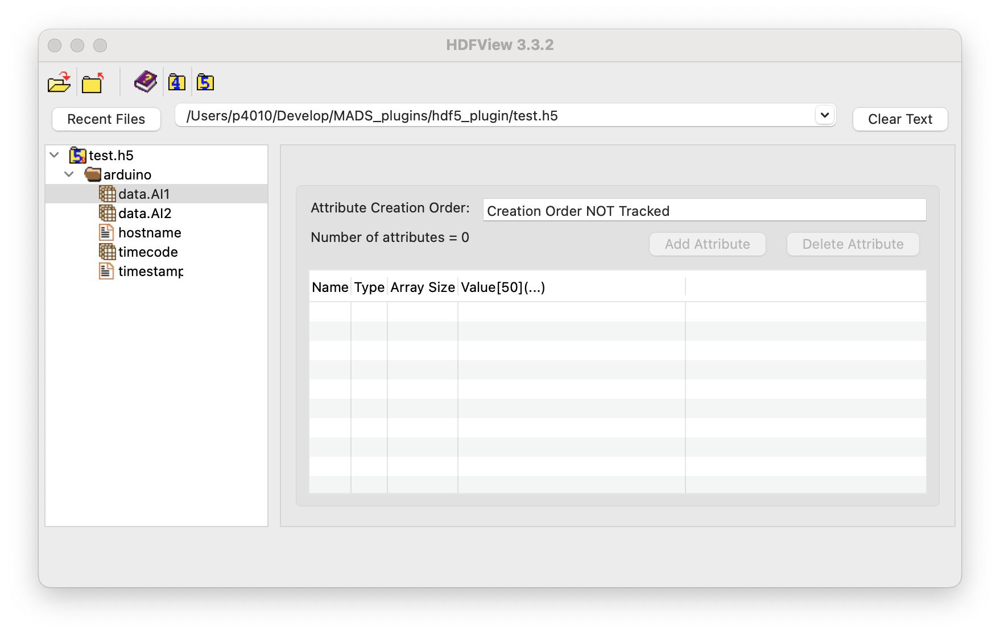

HDF5 Logger
MADS comes packaged with a logging facility to MongoDB database. For some applications, a file-based logging system is more appropriate. This guide explains how to use the HDF5 logger, which is a file-based sink for MADS using the hierarchical data format.
Motivation
By default, MADS enable capturing data produced in the network to a MongoDB database, one topic per table. This is very effective and has some advantages:
- concurrency: it is possible to access the database while the data acquisition is still running, even from multiple clients
- persistence: the data is stored in a database, which is designed to handle large amounts of data and provide fast access; MongoDB datapases can also be replicated and sharded, which allows for high availability, scalability, and resiliency
- querying: the data can be queried using the MongoDB query language, which is powerful and flexible; MongoDB aggregations can be defined as read-only tables, which can offload the processing from the client side and allow for complex data analysis
- visualization: the data can be visualized using tools like MongoDB Compass, which provides a graphical interface to explore the data
On the other hand, for simpler tasks this can prove an overkill. Furthermore, if forces the user to learn the MongoDB query language, which is not always necessary. For these reasons, MADS provides a file-based logging system, which is simpler to use and does not require a database.
Since data generted by MADS can have a complex and schema-free structure, a simple table-oriented logging is not sufficient, unless we would revert to multiple flat-files, which can turn too messy pretty quickly. For this reason, MADS uses the HDF5 format, which is a hierarchical data format that allows for storing complex data structures in a single file. HDF5 is widely used in scientific computing and data analysis, and it is supported by many libraries and tools.
A common use for HDF5 is to store and retrieve data used for training machine learning models, given that the format has a good support within Python and other scripting languages (as GNU-R) used for data analysis.
The HDF5 Sink Plugin
Installation
While the MongoDB logger agent (mads logger) comes pre-packaged with MADS, the HDF5 logger is a plugin that needs to be compiled and installed separately. To install it, run the following commands on the machine where you want the logs to be saved:
git clone --depth 1 https://github.com/MADS-Net/hdf5_plugin.git
cd hdf5_plugin
cmake -Bbuild -DCMAKE_INSTALL_PREFIX=$(mads -p)
cmake --build build --target install- Follow the instructions on https://github.com/MADS-Net/hdf5_plugin when building on Windows.
- Some CMake versions on Linux cannot compile successfully the project when a parallel build is enabled (
-joption). If you encounter issues, try to build the project without parallelization, at least for the first build when the HDF5 library is compiled.
Confirm that the plugin has been installed correctly by running:
mads --pluginswhich shall also report the hdf5_writer.plugin entry.
Configuration
As any agent, the plugin needs a proper entry in the MADS configuration file mads.ini. The relevant configuration parameters are:
sub_topic: the array of topics that we want to logfilename: the full path name to the HDF5 file taht we want to createkeypaths: a dictionary of entries that we want to save (see below for details)keypath_separator: the separator used to split the keypaths (default is.)
Let’s consider an example. We want to log the data collected by an agent running the arduino_plugin, which produces the following JSON data structure on the topic arduino:
{
"data": {
"AI1": 52,
"AI2": 44,
"AI3": 58,
"AI4": 45,
"AI5": 165,
"DI1": 1,
"DI2": 1,
"DI3": 1
},
"hostname": "mads-agent.local",
"millis": 150679,
"timecode": 39198.68,
"timestamp": {
"$date": "2025-07-11T10:53:18.716+0200"
}
}The HDF5 logger always saves the field timestamp, timecode, and hostname. Everything else is optional and must be specified on the INI file using keypaths. A keypath is a string representing the hierarchical path within the JSON structure. For example, the ["data"]["AI1"] field can be accessed using the keypath data.AI1, where the field separator is the dot (.) by default, and can be changed using the keypath_separator parameter.
A valid INI section would then be:
[hdf5_writer]
sub_topic = ["arduino"]
filename = "/path/to/test.h5"
keypaths = {"arduino" = ["data.AI1", "data.AI2"]}
keypath_separator = "."Whereas, if we wanted to capture data from two different topics, we would do something like:
[hdf5_writer]
sub_topic = ["arduino", "temp_sensor"]
filename = "/path/to/test.h5"
keypaths = {"arduino" = ["data.AI1", "data.AI2"], "temp_sensor" = ["data.Temperature", "data.Humidity"]}
keypath_separator = "."Note that the TOML standard used for mads.ini forbids newlines within a dictionary field, so that the keypaths field must be on a single line!
As an alternative, you can split the dictionary using sub-tables:
[hdf5_writer]
sub_topic = ["arduino", "temp_sensor"]
filename = "/path/to/test.h5"
keypath_separator = "."
[hdf5_writer.keypaths]
arduino = ["data.AI1", "data.AI2"]
temp_sensor = ["data.Temperature", "data.Humidity"]Execution
Now that the plugin is installed and configured, you can use it as a sink plugin:
mads sink -s tcp://broker.host:9092 hdf5_writer.pluginOf course, if the plugin runs on the same broker machine, you can just use mads sink hdf5_writer.plugin. The initial output is something like:
Agent: hdf5_writer
Settings file: tcp://localhost:9092
Pub endpoint: tcp://localhost:9090
Pub topic: hdf5_writer
Sub endpoint: tcp://localhost:9091
Sub topics: arduino topic2 control
Compression: enabled
Timecode FPS: 25
Timecode offset: 0 s
Searching for installed plugin in the default location /Users/p4010/usr/local/lib
Plugin: /usr/local/lib/hdf5_writer.plugin (loaded as hdf5_writer)
File name /tmp/hdf5_plugin/test.h5
Keypath sep. .
Keypaths arduino.timecode, arduino.timestamp, arduino.hostname, arduino.data.AI1, arduino.data.AI2, temp_sensor.timecode, temp_sensor.timestamp, temp_sensor.hostname, temp_sensor.data.Temperature, temp_sensor.data.Humidity (total: 10)
Sink plugin startedThe content of the HDF5 file can be quickly inspected using the HDFView GUI tool:

As we see, within the HDF5 file data are collected into groups (folders), one for each topic, and datasets (tables), one for each keypath. The name of the dataset corresponds to the keypath:
- when the keypath produces a scalar, the dataset is a column vector (1-column table)
- when the keypath produces a vector, the dataset is a 2D table with one column per element of the vector
- timecode and timestamp are collected as vectors (same length of any other table)
- timecode is stored as a string according to ISO 8601 format, which is the default for MADS
The plugin CMake install command also installs three command-line tools to inspect the HDF5 file:
h5ls: lists the contents of an HDF5 fileh5watch: watches an HDF5 file for changesh5stat: displays statistics about an HDF5 file
So, for example, we can list the contents of the file using:
h5ls -r /path/to/test.h5Which produces an output like:
/ Group
/arduino Group
/arduino/data.AI1 Dataset {303/Inf}
/arduino/data.AI2 Dataset {303/Inf}
/arduino/hostname Dataset {303/Inf}
/arduino/timecode Dataset {303/Inf}
/arduino/timestamp Dataset {303/Inf}Where {303/Inf} indicates that the dataset has 303 elements and is not limited in size (i.e., it can grow indefinitely). The the h5stat command can be used to display statistics about the file, such as the number of datasets, groups, and attributes, as well as the size of the file.
Finally, h5watch command can be used to monitor the file for changes, which is useful when the data acquisition is still running:
h5watch /path/to/test.h5/arduino/data.AI1
# will watch for changes untile CTRL-C